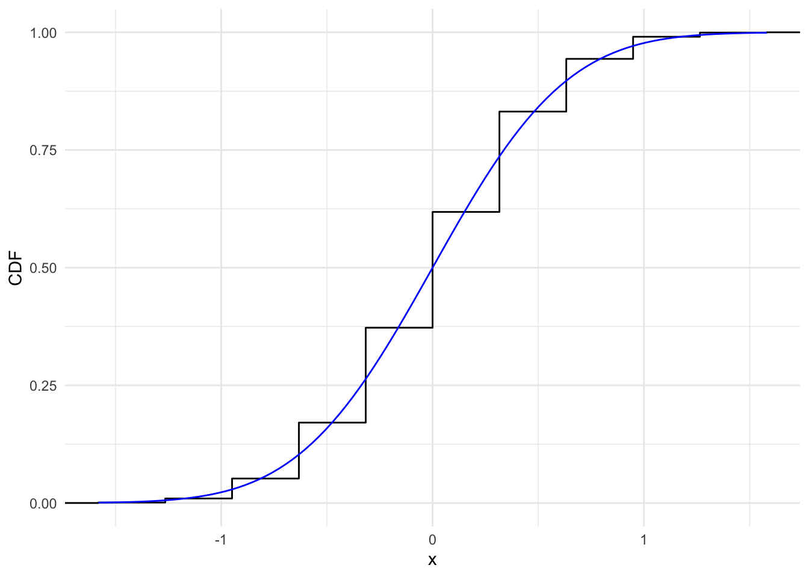

For any \(\alpha \in (0,1)\), use the Central Limit Theorem to define a test with asymptotic level \(\alpha\), then give a formula for the asymptotic -value of your test, for the following scenario:
\(X_1, \ldots, X_n \stackrel{i . i . d .}{\sim}\) Poiss \((\lambda)\) for some unknown \(\lambda>0\); \[
H_0: \lambda=\lambda_0 \quad \text { v.s. } \quad H_1: \lambda \neq \lambda_0 \quad \text { where } \lambda_0>0
\]
Consistency
The consistency assumption states that if an individual is observed under treatment condition \(T\), the potential outcome under this treatment is the same as the observed outcome. Mathematically, it can be represented as:
\(Y_i(D_i)\) is the potential outcome for individual \(i\) under treatment \(D_i\).
\(Y_i\) is the observed outcome for individual \(i\).
\(T_i\) is the observed treatment status for individual \(i\).
Violations of the Consistency Assumption:
Multiple Versions of Treatment: If there are multiple versions of the treatment and it’s unclear which version the individual received, the assumption is violated. This can be represented as?
Interference Between Units: If the outcome for one individual depends on the treatment status of another, this violates the assumption. How to represent this?
Using simulation to understand properties of random variables
A central topic in statistics is determining the properties of different random variables. What are their expectations and variances? Does a sequence of random variables converge to some known distribution? A lot of this can be done theoretically, but sometimes it can be challenging to derive properties analytically.
A very common tool that is used to obtain numerical results in lieu of analytical ones is monte carlo simulation. The principle is simple: we can approximate the properties of some random variable \(X\) – its mean, variance, etc… – by taking a repeated number of i.i.d. draws from that random variable and computing them from the empirical distribution. For example, if we wanted to know the expectation of some random variable, we can take a large number of independent, repeated draws from that random variable, store those draws, and compute the average. As we let the number of draws get arbitrarily large (our only limitation is computing resources and time), this will converge to the true mean.
In practice, you see simulations in statistical methods papers all the time, often to illustrate certain properties of an estimator where the intuition may not be clear just from the analytical result or to get some sense of properties that are difficult to derive. For example, in papers where much of the theory relies on asymptotic approximations, we may use simulations to get a sense of how good the approximation is in small samples or to compare the performance of different estimators across fixed sample sizes.
You also will find simulations useful as a way of checking analytical results – it’s easy for a proof to go wrong or to be unsure of some of the steps, so it can help to use a simulation to understand what the correct answer should be at least for a particular set of parameter values. Simulations can be a great way of generating intuition when analytical results are hard to come by.
Common tools of simulation
In conducting a simulation, you will typically rely on two sets of programming tools: random number generator functions and loops.
Random number generators
R has a suite of functions to allow you to generate (pseudo)-random numbers from particular distributions. These functions typically start with r and the name of the distribution. For example, the function to generate random draws from the normal is rnorm. Built-in functions cover most of the common ones: uniform, bernoulli, binomial, normal, poisson, etc… and other packages exist for more esoteric distributions. Because computers are deterministic, the algorithms that generate these numbers are not truly “random” in the sense that the exact sequence of random numbers can be reproduced if one knows the initial “seed” for the algorithm. These random number generators create sequences of numbers that have the properties of randomness (e.g. independence), but they can be replicated for a fixed seed. This is actually great for us researchers since it ensures replicability – even if you are using a simulation, I can reproduce your exact numeric results if I fix the seed. However, this does mean that you need to be aware of when you set the seed in your algorithm. Set it once in your script or code fragment and don’t change it.
# Set the seed for a random number generatorset.seed(60615)# Generate N=100 random normal variatesrand_norm <-rnorm(100, mean=2, sd=1)# Calculate the mean - it's close to 2print(mean(rand_norm))
[1] 2.000202
# Note that if I run this fragment again and again, I will get the exact# same values in rand_norm - this is because the seed is fixed at the top of# the fragment!
In a simulation, you will need to generate draws from a random variable multiple times. Often this will be some sort of function of other random variables – remember, all an estimator is is a function of other random variables. There will not be an existing routine that does this for you, so you will need to write your own code that takes as input some random numbers and generates the desired output (e.g. a difference-in-means, a regression estimator, etc…). You probably don’t want to copy and paste this code 1 million times, so you’ll need a way of repeating the same process with different random inputs and storing the results.
Here we will use monte carlo simulation to approximate the mean of the sampling distribution of the sample mean with \(N = 30\), \(E[X_i] = .5\), \(X_i \sim \text{Bernoulli}\) i.i.d.
set.seed(60615) # Set random seedniter <-100000# Number of for loop iterations sample_means <-replicate(niter, mean(rbinom(n=50, size=1, prob=.5)))# What's the mean of the sampling distribution? The population mean E[X_i]mean(sample_means)
[1] 0.499744
# What's its distribution? It's not bernoulli! It's (roughly) normal (by the CLT)tibble(xbar = sample_means) %>%ggplot(aes(x=xbar)) +geom_histogram(aes(y = ..density..), binwidth=.02) +xlab("Sample mean") +ylab("Density") +stat_function(fun=dnorm, args=list(mean=.5, sd=sqrt(.25/50)),col="dodgerblue") +# Overlay a normal curve w/ asymptotic mean/variancetheme_minimal()
Warning: The dot-dot notation (`..density..`) was deprecated in ggplot2 3.4.0.
ℹ Please use `after_stat(density)` instead.
Recall the statement of the CLT: \(X_{1}, X_{2}, ..., X_{n}\) are independent and identically distributed (i.i.d.) random variables with \(V(X_{i}) = \sigma^2 < + \infty\), \(\sqrt{n} (\frac{1}{n} \sum_{i = 1}^{n} X_i - \mathbb{E}[X_{i}]) \xrightarrow[]{D} N(0, \sigma^2)\). In the simulation below, we illustrate the convergence of the CDF. Again, we use i.i.d. Bernoulli random variable with \(\mathbb{P}[X_{i} = 1] = 0.5\). Thus, \(\mathbb{E}[X_{i}] = 0.5\) and \(\sigma^2 = 0.25\).
# set seed to make results replicableset.seed(60615)# for each sample size, iterate 5000 timesniter <-5000# create a vector to store the resultsclt_seq <-rep(NA, niter)# loop over different n, i.e., sample size: 10, 30, 50, 100, 300, 500, 5000for(j inc(10, 30, 50, 100, 300, 500, 5000)){ samp_size <- jfor(i in1:niter){# compute the quantity in the CLT: clt_seq[i] <-sqrt(samp_size) * (mean(rbinom(n = samp_size, size =1, prob = .5)) -0.5) }# save plot to compare the empirical CDF with normal CDF plot <-tibble(clt_sim = clt_seq) %>%ggplot(aes(x = clt_sim)) +stat_ecdf(geom ="step") +xlab("x") +ylab("CDF") +stat_function(fun = pnorm, args =list(mean =0, sd =0.5),col ="blue")+theme_minimal()# plot figuresprint(plot)}

Illustration: Bias of the uncorrected sampling variance estimator
Recall our classic setup for estimating a population mean \(\mu\) using \(N\) i.i.d. samples \(X_i\) with \(E[X_i] = \mu\), \(Var(X_i) = \sigma^2\) (no assumptions on the distribution of \(X_i\), just its moments). Our estimator \(\hat{\mu} = \bar{X} = \frac{1}{N}\sum_{i=1}^N X_i\) has some known properties. We know \(E[\hat{\mu}] = \mu\) and that it is therefore unbiased. We know that its true sampling variance is \(Var(\hat{\mu}) = \frac{\sigma^2}{N}\) and by extension the standard error is \(\frac{\sigma}{\sqrt{N}}\).
However, if we want to construct confidence intervals and do inference, we need \(Var(\hat{\mu})\), but we do not know \(\sigma^2\). We therefore have to estimate using some estimator. One straightforward approach simply plugs in an estimate of \(\sigma^2\), \(\hat{\sigma^2}\) giving \(\widehat{Var(\hat{\mu})} = \frac{\hat{\sigma^2}}{N}\). But how should we construct our estimator \(\hat{\sigma^2}\)? Well, the variance is defined as \(E[(X - E[X])^2]\), the average of the squared deviations from the mean. We can use the sample analogue \(\hat{\sigma^2}_{\text{uncorrected}} = \frac{1}{N}\sum_{i=1}^N (X_i - \bar{X})^2\). However, this estimator turns out to be biased although it is consistent. It turns out that using \(N-1\) instead of \(N\) addreses this bias \(\hat{\sigma^2}_{\text{corrected}} = \frac{1}{N-1}\sum_{i=1}^N (X_i - \bar{X})^2\).
Let’s show this via simulation! Start by defining the data-generating process for a fixed value of \(N = 30\), \(\mu = 0\), \(\sigma^2 = 4\), We’ll assume \(X_i\) is normal, though this isn’t strictly necessary.
# Set seedset.seed(60615)# Define the parameters of the DGPN =30mu =0sigma =sqrt(4)# Define a function to compute the unadjusted variancevar_unadj =function(x){return((1/length(x))*sum((x -mean(x))^2))}# Number of iterationsniter =10000# Run the simulation and get evaluations of the unadjusted variancesim_results =1:niter %>%map_dbl(function(x) var_unadj(rnorm(n=N, mean=mu, sd=sigma)))# Calculate biasmean(sim_results) - sigma^2
[1] -0.1355836
Now, we can show that this bias goes away when we use the \(N-1\) correction (sometimes called “Bessel’s Correction”).
# Set seedset.seed(60615)# Define the parameters of the DGPN =30mu =0sigma =sqrt(4)# Define a function to compute the unadjusted variance# This function is equivalent to var() in Rvar_adj =function(x){return((1/(length(x)-1))*sum((x -mean(x))^2))}# Number of iterationsniter =10000# Run the simulation and get evaluations of the unadjusted variancesim_results_adj =1:niter %>%map_dbl(function(x) var_adj(rnorm(n=N, mean=mu, sd=sigma)))# Calculate biasmean(sim_results_adj) - sigma^2
[1] -0.002327903
Let’s see how these two estimators compare across different values of N. There are lots of ways to do this. You could do a nested for loop – the outer loop varying N and the inner loop running all niter iterations. This will work but the code can look messy and confusing. We’ll stick with map, but nest it. map applies a function to each element of a list. We’ll pass the vectors in each list element to another call to map to do what we did above but for each sample size.
# Set seedset.seed(60615)# Parametersmu =0sigma =sqrt(4)# Set range of Ns - this can be whatever you want, but more levels = more simsN_vec =c(20, 40, 60, 100, 1000, 2000)niter =10000# Make a list with N_vec elements each containing niter copies of the relevant sample sizeiter_list <- N_vec %>%map(function(x) rep(x, niter)) # Use Map twice# Then summarize each simulation run by taking the meansim_results_unadj <- iter_list %>%map(. %>%map_dbl(function(x) var_unadj(rnorm(n=x, mean=mu, sd=sigma)))) %>%map_dbl(mean) # Note that each vector contains the sample size, # so we're passing that sample size to the n argument in our in-line function (n=x).sim_results_adj <- iter_list %>%map(. %>%map_dbl(function(x) var_adj(rnorm(n=x, mean=mu, sd=sigma)))) %>%map_dbl(mean)# Put into a dataframe for plottingplot_frame =data.frame(n = N_vec, Uncorrected = sim_results_unadj - sigma^2, Corrected = sim_results_adj-sigma^2)# GGplot likes faceting by factors - let's go from wide to long here!plot_frame <- plot_frame %>%pivot_longer(cols =c(Uncorrected, Corrected), names_to="Estimator", values_to ="Bias")# Plot the resultsplot_frame %>%ggplot(aes(x=n, y=Bias, colour=Estimator)) +geom_hline(yintercept =0, lty=2) +geom_line() +xlab("Sample Size (N)") +ylab("Bias") +theme_minimal()
Rejection Sampling
Rejection sampling is a technique in Monte Carlo simulation, particularly useful in complex probability distributions. This method allows for sampling from a target distribution indirectly by using a more straightforward, auxiliary distribution.
The acceptance-rejection method is based on a simple idea: draw samples from an easy-to-sample distribution and accept or reject each sample based on a criterion related to the target distribution. This approach is particularly beneficial when the target distribution is complex or not straightforward to sample from directly.
\[
\begin{aligned}
& \quad \text{Choose a proposal distribution, } q(x), \text{ which is easy to sample from.} \\
& \quad \text{Find a constant } c \text{ such that } c \cdot q(x) \geq f(x) \text{ for all } x, \text{ where } f(x) \text{ is the target distribution.} \\
& \quad \text{Sample } x^* \text{ from } q(x). \\
& \quad \text{Sample } u \text{ from a Uniform distribution } U[0, c \cdot q(x^*)]. \\
& \quad \text{If } u \leq f(x^), \text{ accept } x^; \text{ otherwise, reject it.} \\
& \quad \text{Repeat steps 3-5 until a sufficient number of samples are accepted.}
\end{aligned}
\]
Example
Suppose we want to sample from a Gamma distribution with shape parameter \(\alpha = 2\) and rate parameter \(\beta = 1\). The probability density function of the Gamma distribution is given by
and is a generalization of the factorial function. The Gamma function is not straightforward to evaluate, so we will use rejection sampling to sample from the Gamma distribution.
First, we need to choose a proposal distribution. We will use a Normal distribution with mean \(\mu = 0\) and standard deviation \(\sigma = 1\) as our proposal distribution. The probability density function of the Normal distribution is given by
We can plot the Gamma and Normal distributions to see how they compare.
# Define the target distributiontarget_dist <-function(x) {dnorm(x)}# Define the proposal distributionproposal_dist <-function(x) {dunif(x, min =-3, max =3)}
We need to find a constant \(c\) such that \(c \cdot q(x) \geq f(x)\) for all \(x\). We can plot the two distributions to see where the Normal distribution is greater than the Uniform distribution.
# Plot the target and proposal distributionsx <-seq(-3, 3, length.out =1000)y_target <-target_dist(x)y_proposal <-proposal_dist(x)ggplot() +geom_line(aes(x, y_target), color ="blue") +geom_line(aes(x, y_proposal), color ="red") +theme_minimal()
We can see that the Normal distribution is greater than the Uniform distribution for some \(x\) values. We can find the maximum value of the normal distribution.
# Find the maximum value of the proposal distributionmax_proposal <-max(y_proposal)
We can then find the maximum value of the target distribution.
# Find the maximum value of the target distributionmax_target <-max(y_target)
We can then find the constant \(c\) such that \(c \cdot q(x) \geq f(x)\) for all \(x\).
# Find the constant cc <- max_target / max_proposal
We can plot the two distributions again to see where the Normal distribution is smaller than the Uniform distribution.
# Plot the target and proposal distributionsx <-seq(-3, 3, length.out =1000)y_target <-target_dist(x)y_proposal <-proposal_dist(x)ggplot() +geom_line(aes(x, y_target), color ="blue") +geom_line(aes(x, y_proposal * c), color ="red") +theme_minimal()
We can now use the \(c\) to sample from the target distribution. We will sample 1000 values from the target distribution.
# Sample from the target distributionn <-1000x <-numeric(n)i <-1while (i <= n) {# Sample from the proposal distribution x_star <-runif(1, min =-3, max =3)# Sample from a Uniform distribution u <-runif(1, min =0, max = c *proposal_dist(x_star))# Accept or reject the sampleif (u <=target_dist(x_star)) { x[i] <- x_star i <- i +1 }}
We can plot the empirical distribution of the samples.
# Plot the samplesggplot() +geom_histogram(aes(x, y = ..density..), data =tibble(x), binwidth =0.1) +theme_minimal()
We can also plot target distribution on top of the histogram.
# Plot the samplesggplot() +geom_histogram(aes(x, y = ..density..), data =tibble(x), binwidth =0.1) +stat_function(fun = target_dist, color ="blue") +theme_minimal()